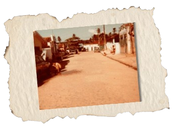
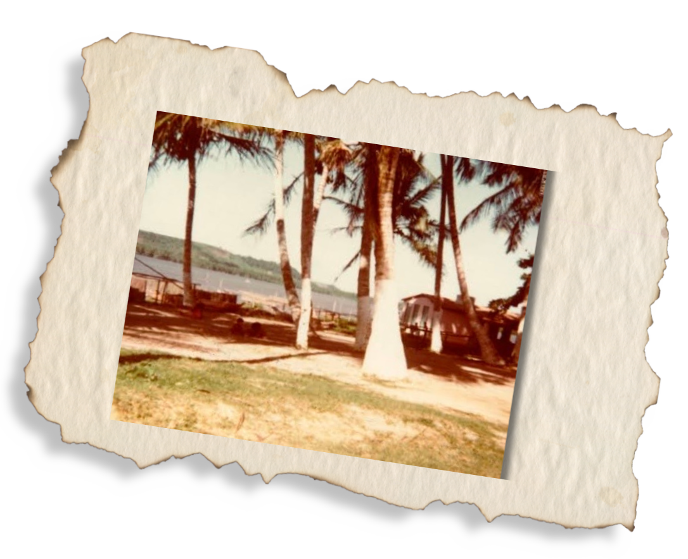

Os índios Caetés foram os primeiros habitantes
da região, por volta de 1853. A primeira
moradora, Francisca de Albuquerque, instalou-se
no sítio Livramento, construindo também, em 1900,
a primeira capela em homenagem à Nossa Senhora do Livramento.
O primeiro recenseamento do local foi realizado em 1912
por João Gomes, José Balbino e Mandu Araújo.
O povoado teve o nome mudado para Roteiro
pelos próprios moradores, pois eles
acreditavam que os jesuítas descobriram no local
o "roteiro" de Dom Pero Fernandes Sardinha,
devorado pelos índios na região.
Depois de ver o povoado sendo transformado em vila,
o padre Júlio de Albuquerque, da então freguesia de São Miguel dos Campos, decidiu
vender o patrimônio de Nossa Senhora do Livramento
- doado por Francisca de Albuquerque à santa antes de sua morte para
Antonio Martins Moreira, que o revendeu,
fazendo-o passar por muitos donos.
